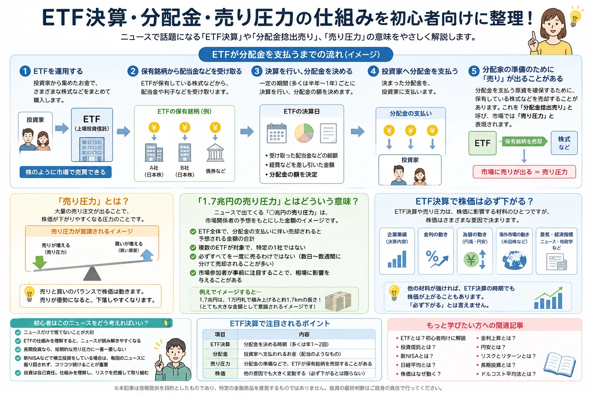

ETF決算とは？なぜ分配金で「売り圧力」が話題になるの？初心者向けに解説
ETF決算と分配金のニュースを、まずは落ち着いて整理

- ETF決算は、ETFの分配金などを決める運用上の区切りです
- 分配金を支払うために、保有資産の一部を売却する場合があります
- この売却が市場で「分配金捻出売り」「売り圧力」と呼ばれることがあります
- ただし、ETF決算だけで株価が必ず下がるわけではありません
ニュースで「ETF決算による1.7兆円規模の売り圧力」という言葉を見ると、
「暴落するの？」「ETFってそんなに市場へ影響するの？」と不安になる人も少なくありません。
しかし、このニュースはETFの仕組みを知ると理解しやすくなります。
ETFには決算日があり、保有している株式などから受け取った配当金などをもとに、投資家へ分配金を支払うことがあります。
この記事では、ETFとは何か、ETF決算とは何か、分配金捻出売りとは何か、そして初心者がこのニュースをどう受け止めればよいのかを中立的に整理します。
ETFとは？
ETFとは「上場投資信託」のことです。
投資信託の一種ですが、証券取引所に上場しているため、株式と同じように市場で売買できます。
たとえば、日経平均株価やTOPIXなどの指数に連動するETFであれば、個別株を何十銘柄も自分で買わなくても、指数全体に近い値動きを目指す投資ができます。
そのため、ETFは「株のように売買できる投資信託」と考えると分かりやすいです。
投資信託との違い
一般的な投資信託は、1日1回算出される基準価額で売買します。
一方、ETFは市場が開いている時間にリアルタイムの価格で売買できます。
ただし、ETFも投資信託も元本保証の商品ではありません。
値動きがあるため、価格が上がることもあれば下がることもあります。
ETF決算とは？
ETF決算とは、ETFが一定期間の運用状況を区切り、分配金などを決めるタイミングのことです。
会社の決算のように「企業が儲かったか」を見るものではなく、ETFという金融商品の運用上の区切りと考えると分かりやすいです。
ETFは、保有している株式から配当金を受け取ることがあります。
その配当金などを原資として、ETFの投資家へ分配金を支払う場合があります。
特に、日本株ETFの一部では決算日が同じ時期に集中することがあり、毎年この時期になると「ETF決算」「分配金捻出売り」がニュースで話題になりやすくなります。
図解風に見るETF決算の流れ
- ETFが株式などを保有する
- 保有銘柄から配当金などを受け取る
- 決算日に分配金の金額などを決める
- 投資家へ分配金を支払う
- 現金が足りない場合、保有資産の一部を売却することがある
ETF決算で注目されるポイント
ETF決算のニュースでは、決算日そのものよりも「分配金を支払うためにどれくらい売りが出るのか」が注目されやすいです。
まずは、ニュースで出てくる言葉を整理しておきましょう。
| 項目 | 内容 | 初心者の見方 |
|---|---|---|
| ETF決算 | 分配金を決める時期 | ETFにも決算日があると理解する |
| 分配金 | 投資家へ支払われるお金 | 株式の配当金に近いイメージで考える |
| 売り圧力 | 分配金準備などで売却されることがある | 市場で意識される売り要因のひとつ |
| 株価 | 他の要因でも大きく変動する | ETF決算だけで判断しない |
※ 横にスクロールできます
分配金を支払うために「売り」が出るとは？
ETFが投資家へ分配金を支払うには、現金が必要です。
ETFが保有銘柄から受け取った配当金だけで十分な場合もありますが、分配金の支払いに備えて、保有している株式などを一部売却して現金を準備する場合があります。
この売却が「分配金捻出売り」と呼ばれることがあります。
市場では、まとまった売却が出る可能性があるため「売り圧力」と表現されます。
売り圧力＝必ず一度に売られる、ではない
ここで大切なのは、「売り圧力」という言葉を過度に怖がらないことです。
売り圧力と聞くと、すべてが一度に売られて株価が大きく下がるように感じるかもしれません。
しかし実際には、売却のタイミングや方法はさまざまです。
市場参加者が事前に見込んでいる場合もあり、株価にある程度織り込まれることもあります。
そのため、「分配金捻出売りがある＝必ず大きく下がる」と決めつけないことが重要です。
「1.7兆円の売り圧力」とはどういう意味？
ニュースで出てくる「1.7兆円の売り圧力」という表現は、ETF決算に伴って市場で売却需要が発生する可能性がある、という市場予想を指して使われることがあります。
これは一社のETFだけを指すものではなく、複数のETF全体で見た推計として語られるのが一般的です。
また、「1.7兆円」という数字は大きく見えますが、必ずその金額が一日で全部売られるという意味ではありません。
現物株だけでなく先物などを含めた見方がされる場合もあり、ニュースの数字は前提によって変わります。
なぜ市場参加者は注目するのか
株式市場では、企業業績や金利だけでなく、需給も短期的な値動きに影響します。
需給とは、買いたい人と売りたい人のバランスのことです。
ETF決算によってまとまった売りが出る可能性があると、市場参加者は「その売りをどの程度こなせるか」を注目します。
ただし、需給イベントはあくまで相場材料のひとつです。企業業績や海外市場、為替、金利など、ほかの材料が強ければ株価が上がることもあります。
ETF決算で株価は必ず下がる？
ETF決算に伴う売りは、短期的に意識されることがあります。
ただし、ETF決算だから株価が必ず下がる、とは言えません。
相場は、ひとつの材料だけで決まるものではありません。
同じ時期に強い企業決算、海外株高、円安、金利低下、政策期待などがあれば、売り圧力が話題になっていても相場が上昇することがあります。
反対に、悪材料が重なると下落しやすくなることもあります。
- 企業業績がよければ買い材料になります
- 金利の動きは株価の評価に影響します
- 為替は輸出企業・輸入企業の見方に影響します
- 海外市場の上昇・下落も日本株に影響することがあります
- 投資家心理や需給も短期的な値動きに関わります
初心者はこのニュースをどう考えればいい？
ETF決算や分配金捻出売りのニュースは、相場を理解するうえで役立ちます。
ただし、初心者が短期ニュースだけで慌てて売買するのは注意が必要です。
- ニュースだけで慌てて売買しない
- 長期投資なら、毎回の短期イベントに過剰反応しない
- 新NISAでは、短期の需給よりも投資目的と期間を確認する
- ETFや投資信託の分配金の仕組みを理解する
- 「売り圧力」という言葉を、暴落予告のように受け取らない
特に新NISAでETFや投資信託を検討している人は、短期的なニュースに振り回されるよりも、商品内容、リスク、手数料、分配金の方針、投資期間を確認することが大切です。
ニュースは怖がるためではなく、仕組みを理解するきっかけとして使うと学びになります。
ETFと投資信託の違い
ETF決算を理解するには、ETFと一般的な投資信託の違いも押さえておくと分かりやすくなります。
どちらが必ず優れているという話ではなく、売買方法や価格の決まり方、分配金の扱いが異なります。
| 比較項目 | ETF | 投資信託 |
|---|---|---|
| 売買方法 | 市場で売買 | 基準価額で売買 |
| 価格 | リアルタイム価格 | 1日1回価格 |
| 分配金 | 分配金ありの商品も多い | 再投資型も多い |
| 使い方のイメージ | 株式と同じ感覚で売買しやすい | 積立向きの商品も多い |
※ 横にスクロールできます
関連して読みたい記事
ETF決算のニュースは、ETFだけでなく、株価、金利、為替、長期投資の考え方ともつながっています。
仕組みを順番に確認すると、ニュースへの不安を減らしやすくなります。
よくある質問（FAQ）

-
Q. ETF決算とは？
ETF決算とは、ETFが一定期間の運用状況を区切り、分配金などを決めるタイミングのことです。企業の決算とは意味が異なり、ETFという金融商品の運用上の区切りとして理解すると分かりやすいです。 -
Q. ETFは毎年決算がありますか？
ETFには決算日があります。決算の回数や時期は商品ごとに異なり、年1回、年2回、毎月などさまざまです。購入前に商品ページや目論見書で確認することが大切です。 -
Q. 分配金捻出売りとは？
分配金を投資家へ支払うため、ETFが保有資産の一部を売却して現金を準備することがあります。この売却が市場で分配金捻出売りと呼ばれることがあります。 -
Q. ETF決算で暴落しますか？
ETF決算が短期的に意識されることはありますが、それだけで株価が必ず下がるとは限りません。株価は企業業績、金利、為替、海外市場、投資家心理など複数の要因で動きます。 -
Q. 新NISAにも関係ありますか？
新NISAでETFや投資信託を検討している人にとって、分配金や決算の仕組みを理解することは役立ちます。ただし、長期投資では短期ニュースだけで売買を決めないことが大切です。
まとめ｜ETF決算は仕組みを知れば怖がりすぎなくてよい
- ETF決算は、ETFの分配金などを決める毎年意識されやすいイベントです
- 分配金支払いのため、保有資産の一部が売却されることがあります
- この売却が「分配金捻出売り」「売り圧力」と呼ばれます
- ただし、相場はETF決算だけでは決まりません
- 初心者はニュースに慌てるより、ETFの仕組みを理解することが大切です
ETF決算や分配金捻出売りは、短期的には市場で注目されるテーマです。
しかし、ニュースの数字だけを見て「必ず暴落する」と考えるのは危険です。
投資初心者は、ETF決算を相場予想の材料としてだけ見るのではなく、ETFの仕組み、分配金の仕組み、株価が動く要因を学ぶきっかけにするとよいでしょう。
一般ユーザー目線の体験でおすすめの会社をご紹介

ご利用にあたっての注意事項
本記事は情報提供を目的としており、投資の勧誘を目的としたものではありません。ETF・株式・投資信託・外国証券等の取引は元本保証がなく、価格変動等により損失が生じる場合があります。分配金、決算日、税金、手数料、売買ルールは商品や証券会社によって異なります。取引開始前に、契約締結前交付書面や商品説明書、目論見書等を必ずご確認のうえ、ご自身の判断と責任でお取引ください。
最終更新日：2026-07-10